LINE 教師管家Gemini AIGoogle Apps Script行政減負
LINE 教師管家｜一句話整理教學與生活
奕鈞老師分享的 LINE 教師管家，把日常訊息交給 AI 分類，寫入 Google 試算表，並可同步 Google 日曆、回傳班級公告與查看雲端儀表板。
重點摘要
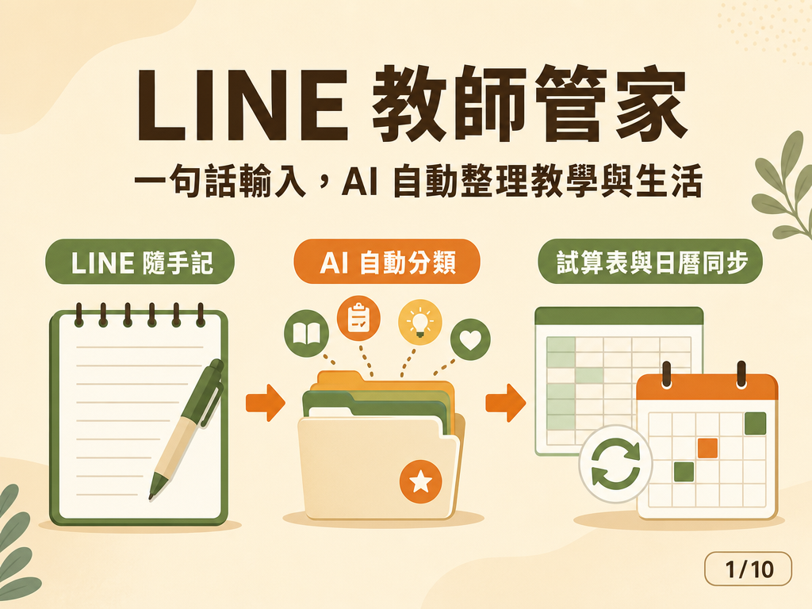
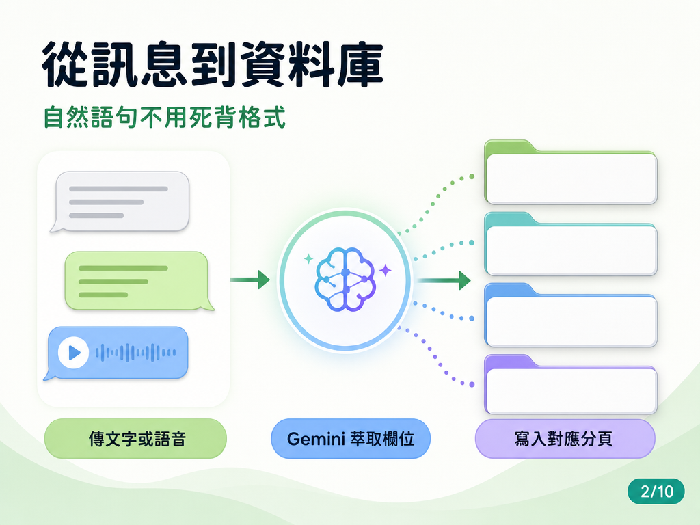
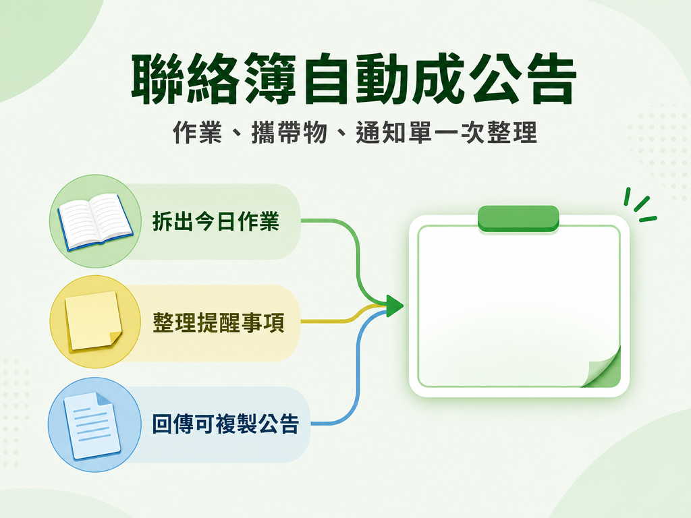
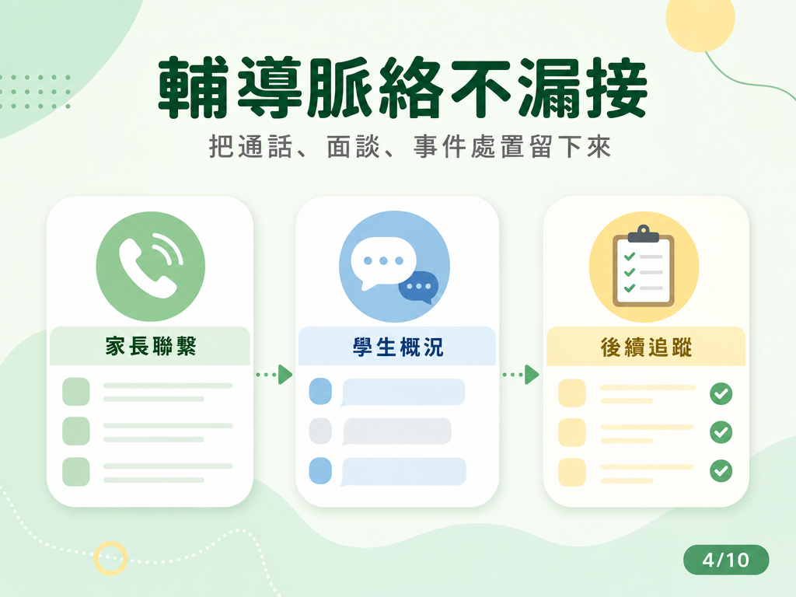
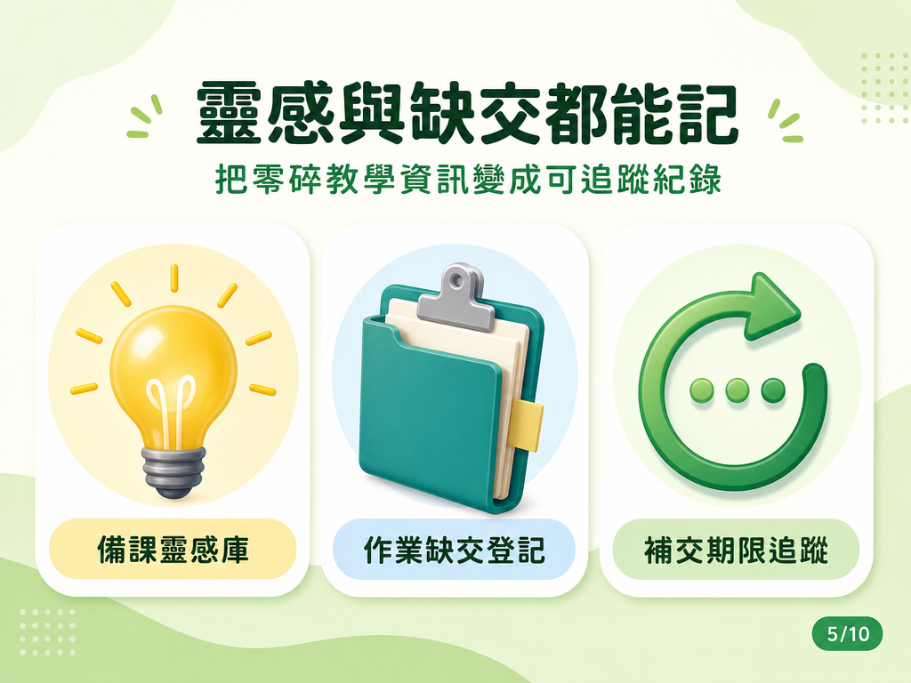
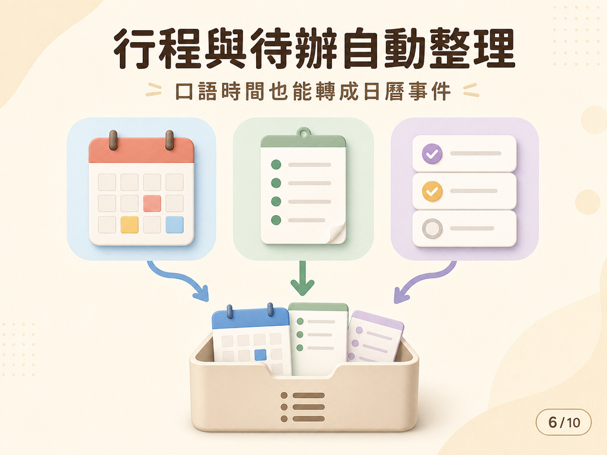
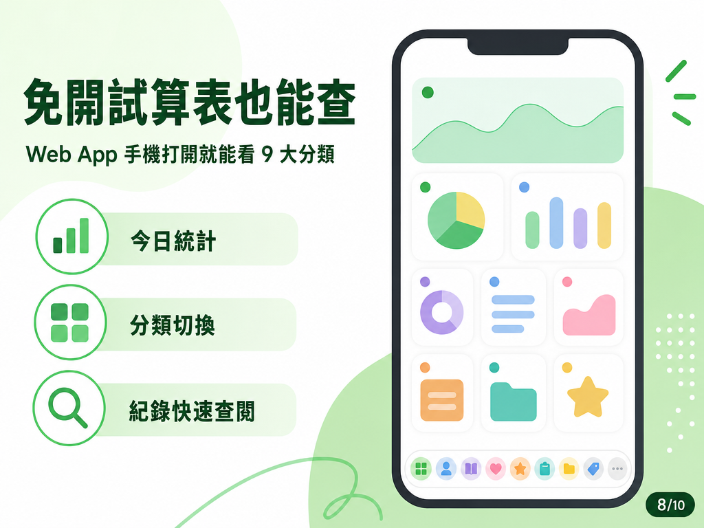
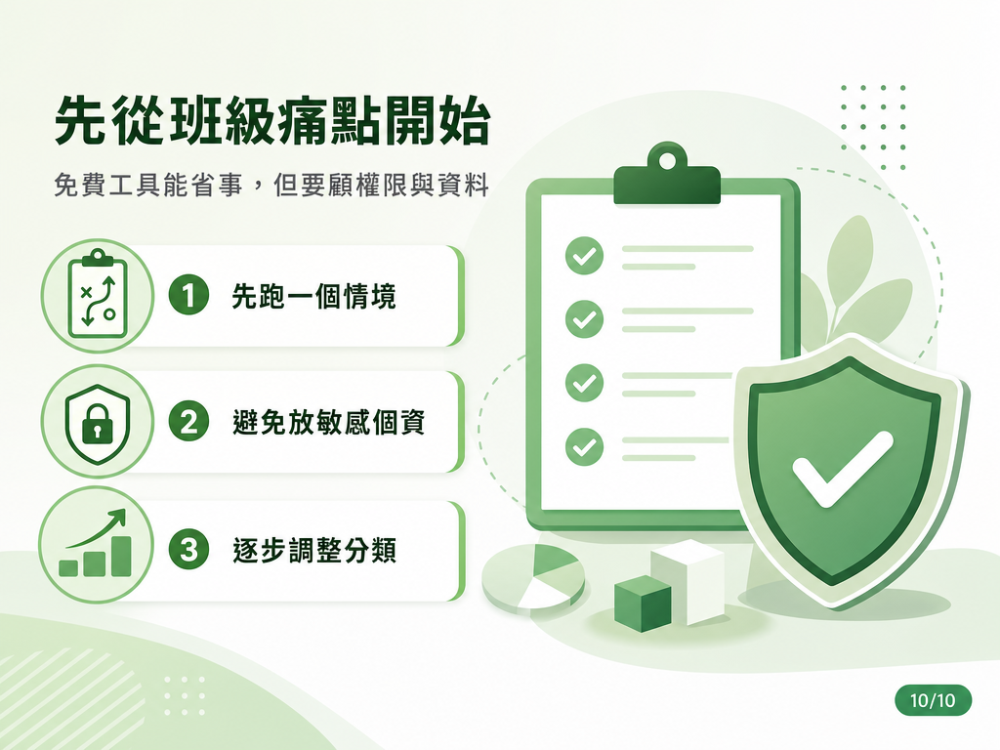
一句話收資料
教師用日常語句或語音輸入，AI 自動判斷分類與欄位。
九大分類
聯絡簿、家長聯繫、備課、缺交、學生概況、記帳、行事曆、生活雜事、好物分享。
自動回傳
分類後在 LINE 回傳整理好的確認卡片或班級公告，方便複製轉發。
雲端儀表板
Web App 可在手機或電腦查看分類紀錄與統計，不一定要打開試算表。
建置方式
以 Google Apps Script、Gemini API、LINE Messaging API 與 Google 試算表／日曆串接。
導入提醒
先從一個高頻情境試跑，避免輸入敏感個資，再逐步擴充分類。
九大分類與用途
| 今日聯絡簿 | 自動整理作業、攜帶物、通知單，回傳可轉發公告。 |
|---|---|
| 家長聯繫紀錄 | 留下電話、面談、LINE 溝通重點與後續約定。 |
| 備課靈感庫 | 保存課堂活動點子、提問設計、探究題目。 |
| 作業缺交登記 | 記錄缺交座號與補交期限，追蹤進度。 |
| 學生概況記錄 | 拆解主要學生與關聯同行學生，保留處置紀錄。 |
| 記帳本 | 判斷收支類型、項目、金額與分類。 |
| 行事曆 | 將口語時間轉成具體日期時間並同步 Google 日曆。 |
| 生活雜事 | 記待辦、採購清單與備忘。 |
| 好物分享 | 擷取品名、連結與推薦心得，建立私房庫。 |
原文截圖／功能實測
以下截圖依熊熊提供內容保留，用於對照原貼文的功能展示。頁面不包含 API key、LINE token 或 Webhook URL。
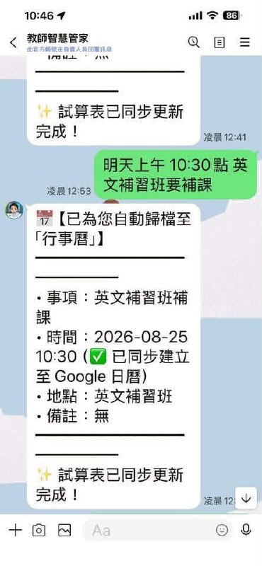
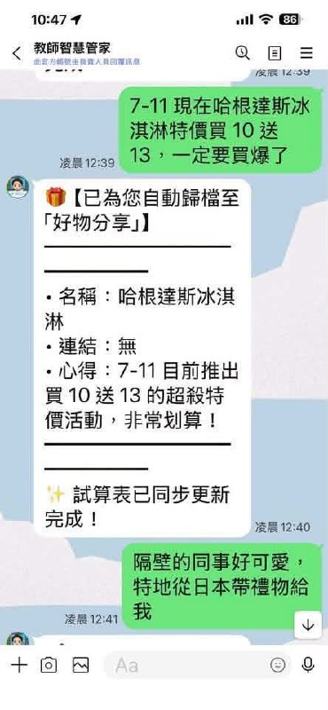
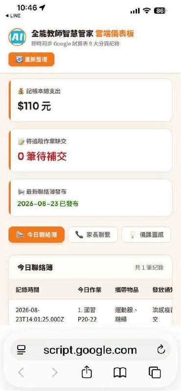
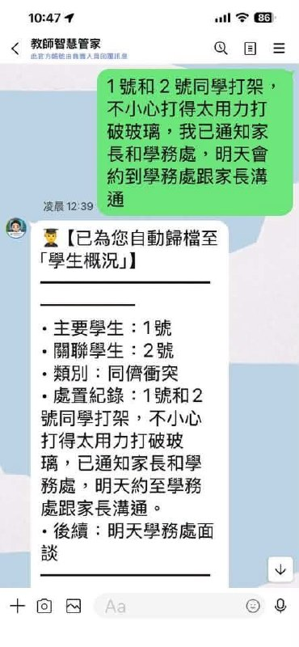
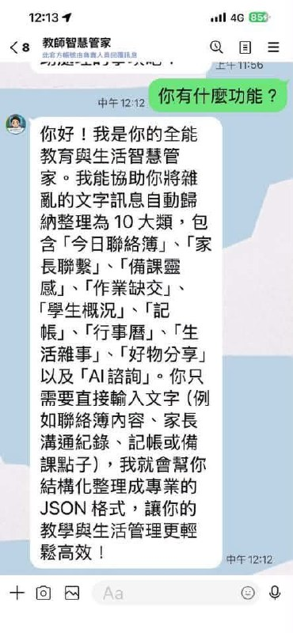
建置路徑
- 取得 Gemini API Key。
- 一鍵建立智慧管家試算表副本。
- 建立 LINE 官方帳號 Channel 並取得 Token。
- 部署 Google Apps Script Web App，綁定 LINE Webhook 與 Google 日曆授權。
小河觀察
這類工具最適合從「高頻、低風險、格式固定」的教師工作開始，例如聯絡簿、缺交登記、備課靈感與會議行程。若要記錄學生概況或家長聯繫，建議先建立資料最小化原則，避免把不必要的敏感個資放進自動化流程。
原文整理
#LINE教師管家
只要在 LINE 說一句話，AI 自動幫你加入行事曆、存進 Google 試算表！🤖📊
隨手傳訊息→自動分類存入試算表＋自動生成班級公告
奕鈞老師教你用免費的Line Bot機器人，5 分鐘打造 0 伺服器費用的「專屬全能教育生活管家」！✨
🌟 九大超強自動分類與教學神器亮點
• 📢 今日聯絡簿： 隨手打「國習P20-22、數作第5回、發疫苗意願書週五交、穿運動服帶跳繩」，AI 自動歸檔並在 LINE 回傳「排版好的美化公告」，直接長按複製就能轉發家長群！
• 📞 家長聯繫紀錄： 記下通話或面談重點與後續約定，輔導紀錄清清楚楚。
• 💡 備課靈感庫： 靈光一閃的提問設計、實驗點子隨手語音記下，不再遺忘。
• 📝 作業缺交登記： 早自習快速登記缺交座號與補交期限，追蹤進度一目了然。
• 👨🎓 學生概況記錄： 自動拆解主要學生與「關聯同行學生」，事件處置完整留存。
• 💰 記帳本： 自動判斷收支、項目與金額，月底不再為對帳煩惱。
• 📅 行事曆： 輸入「明天下午兩點開領域會議」，AI 自動推算具體日期時間與地點。
• 📌 生活雜事： 待辦事項與採購清單隨手備忘。
• 🎁 好物分享： 貼上好書或教具網址，自動擷取品名與連結建立私房庫。
💡 Google Apps Script + Gemini AI 零主機成本，一鍵建立試算表副本直接用
完全不用租伺服器！奕鈞老師已經幫大家程式碼全部打包好，只要點擊「一鍵建立副本」，自動複製到你的 Google 雲端硬碟，免貼程式碼、免自己建表格！❤️
善用 AI 科技，告別手忙腳亂，把時間留給更重要的教學與生活！🚀
#聯絡簿 #家長聯繫 #教學科技 #班級經營 #行政減負 #GeminiAI #Google試算表 #LINE #Google日曆
#LINE教師管家
🌐 完整 4 步驟圖文教學網頁：
https://www.ijun-ai.com/tutor/line-bot/